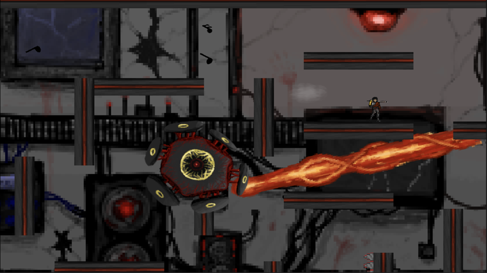

Code Game Jam
Hackathon Vidéoludique (38h)
Le Défi (Contexte)
La Code Game Jam est un hackathon organisé par Chollet, avec pour objectif de créer un jeu vidéo complet en 38 heures sur un thème imposé. Notre équipe s'est réunie à l'IUT (Obilab) pour relever ce défi d'endurance et de créativité.

"Bass Fight" : Survivre à un boss dans une arène fermée.
Chronologie du Hackathon
Début & Brainstorming (0h - 4h)
Jour 1 - MatinAnnonce du thème en live streaming. 4 heures de discussion intense pour définir le concept du jeu, le style graphique et les mécaniques principales.
Développement & "Crunch" (4h - 30h)
Jour 1 & Nuit- Répartition des rôles : Dev, Art, Sound.
- Implémentation des mécaniques de base sous Game Maker.
- Gestion de la fatigue et des conflits d'idées.
Polish & Rendu (30h - 38h)
Jour 2 - Matin- Correction des bugs critiques.
- Ajout des assets sonores finaux.
- Soumission du projet avant la deadline.
Contribution Individuelle
Mon rôle a été central dans la gestion d'équipe et la prise de décision technique :
Soft Skills & Gestion
- Médiation : Gestion des désaccords sur les fonctionnalités pour préserver la cohésion du groupe.
- Adaptabilité : Savoir renoncer à certaines idées ("Kill your darlings") pour garantir un rendu fonctionnel dans les temps.
Game Design
- Level Design : Conception de l'arène de boss pour maximiser la tension.
- Mécaniques : Participation à l'élaboration du système de combat (pattern du boss).
Développement
- Game Maker : Scripting des interactions principales et du HUD.
- Intégration : Assemblage des assets graphiques et sonores des autres membres.
Compétences Acquises
"J'ai appris à m'adapter aux idées des autres, à trouver un équilibre pour l'équipe, et à repousser mes limites en termes de fatigue."
- Collaboration sous pression extrême (méthode Agile improvisée).
- Utilisation de Code With Me (IntelliJ) pour le pair programming à distance avant l'événement.
- Communication efficace et résolution de conflits.
- Gestion du temps et priorisation des features (MVP).